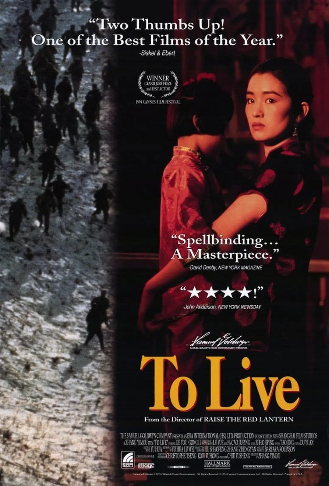
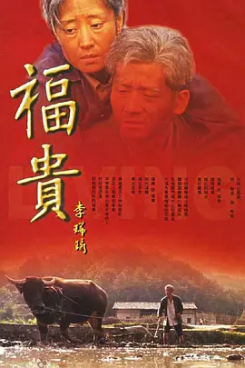
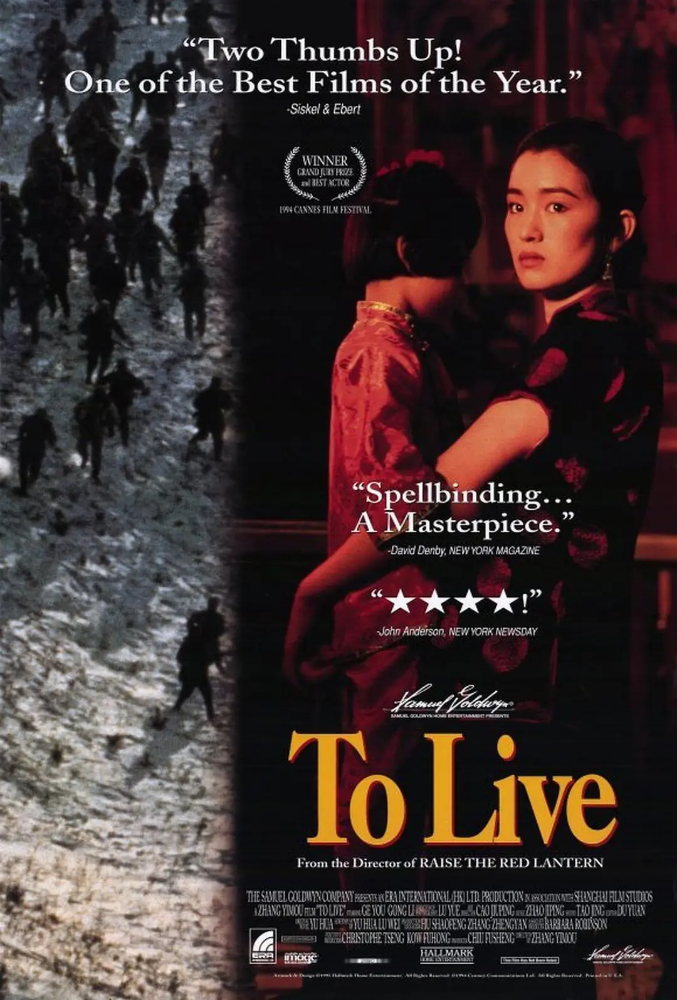
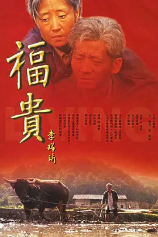
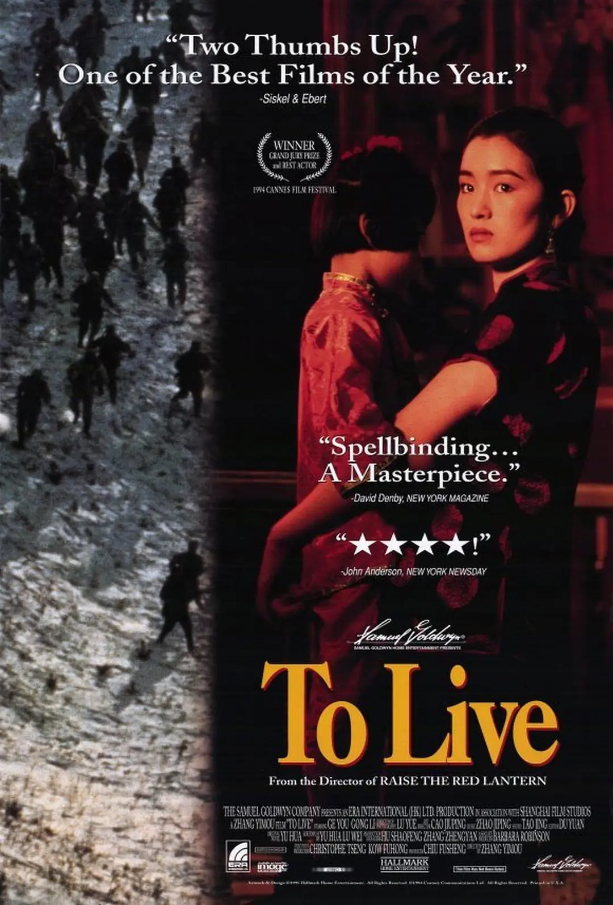
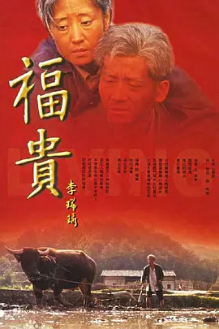
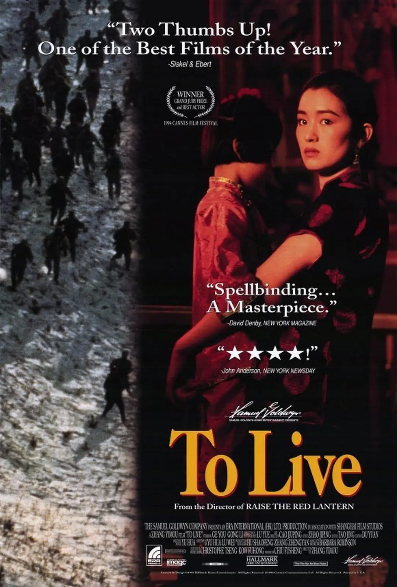
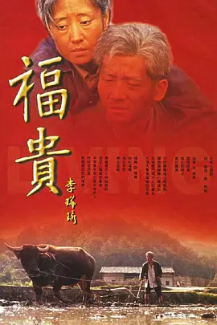

《活着》是一部长篇小说，作者余华，于1993年出版，此书在1994年被拍成电影，2005在电视台播出，在豆瓣有676823人评论打出了9.4的高分。
《活着》讲述了在大时代背景下，随着内战、三反五反、大跃进、文化大革命等社会变革，徐福贵的人生和家庭不断经受着苦难，到了最后所有亲人都先后离他而去，仅剩下年老的他和一头老牛相依为命。小说以普通、平实的故事情节讲述了在急剧变革的时代中福贵的不幸遭遇和坎坷命运，在冷静的笔触中展现了生命的意义和存在的价值，揭示了命运的无奈、生活的不可捉摸等。
1998年7月，《活着》获得意大利“格林扎纳·卡佛”文学奖。
《活着》讲述一个人一生的故事，这是一个历尽世间沧桑和磨难老人的人生感言，是一幕演绎人生苦难经历的戏剧。小说的叙述者“我”在年轻时获得了一个游手好闲的职业——去乡间收集民间歌谣。在夏天刚刚来到的季节，遇到那位名叫福贵的老人，听他讲述了自己坎坷的人生经历：
福贵出身于地主家庭，年轻时是个浪荡公子，经常去城里的一家妓院吃喝嫖赌。他丈人在城里开了一家米行，福贵每次去妓院后都让一个妓女背着他上街，然后从丈人的米行经过，其品行之放荡堕落可见一斑。后来，福贵中了别人的圈套，把家里的田地、房产都输了个精光，于是全家一夜之间从大地主沦为了穷人。福贵的父亲郁闷而亡。父亲的亡故使福贵也清醒过来，决定重新做人。从此，福贵租地度日，他穿上粗布衣服，拿起农具，开始了他一生的农民生涯。不久，福贵的母亲生病了，他拿了家里仅剩的两块银圆，去城里请医生。但他在城里发生了意外：他被国民党军队抓了壮丁。
两年后，福贵被解放军俘虏并释放了。福贵回到家里后，知道母亲早已故去，女儿凤霞也在一次高烧后成了聋哑人。福贵后来又经历了新中国成立后的土地改革、人民公社、大炼钢铁、三年饥荒、“文化大革命”等时期。在此期间，福贵和亲人生离死别：为了让儿子有庆上学，他把女儿送给了别人，不久，女儿跑了回来，全家重又团圆；县长的老婆生孩子需要输血，有庆被一个不负责任的大夫抽血过量致死，而那县长竟是福贵在国民党军队时的小战友春生。春生在后来的“文革”中经不住迫害，悬梁自尽。
几年后，福贵的女儿凤霞嫁了人，但却在产后大出血中死去。有庆、凤霞死后，福贵的妻子家珍也撒手人寰，剩下的只有福贵和女婿二喜、外孙苦根。祖孙三代相依为命了几年后，二喜在一次事故中惨死。福贵和外孙苦根同住几年后，苦根也在一次意外中失去了幼小的生命。最后，福贵买了一头要被宰杀的老水牛，并给它取了“福贵”之名，艰难而平静地活着余生。
出身于地主家庭的徐福贵年轻时嗜赌如命，将万贯家财挥霍一空，由高高在上的富家子弟跌落到穷困潦倒的社会底层，其父母也由于家业的败落，加上徐福贵的不孝相继死去。徐福贵败光家业，他爹去世之后，他没有办法继续他以前吃喝嫖赌的习性，不得不承担起一个男人的责任。从此以后，他疼爱妻子和孩子，找到了珍贵的亲情。由于他是一个四体不勤的家伙，他的妻子家珍和女儿凤霞不得不做了沉重的活。他也尽责，跟家里人过简单、幸福的生活。一次偶然的机会，福贵被国民党抓壮丁进了部队，在那两年的时间里，他目睹了战争的残酷。但是，两年后，他依然活了下来。后来，福贵被解放军俘虏放回，然而回到家后，却发现母亲已经死了，女儿凤霞因一次高烧后成为了聋哑人。他开始与妻子儿女一起过安稳日子。但祸不单行，他儿子有庆因给县长老婆输血却被医生抽干了血而死去。有庆死时，福贵疯了似的冲出太平间，他哭着、喊着，他抓住过道里的医生，狠狠地砸着拳头，他被体育老师拉开，他挣扎着，他的有庆，一动不动地躺在白布下。女儿凤霞嫁给了一个好心的人家后，没过多少幸福日子，也因难产死了，仅仅留下了外孙苦根。凤霞死后，他把女儿的尸骨背回村，他看着女儿被黄土淹没，似乎又想起了那个被送走又偷偷溜回来的凤霞，他想起了出嫁时那个像极了家珍的凤霞，想起了被邻里夸得红了脸的凤霞。躺在有庆的房间里，他和二喜守着未寒的女儿，哭得天昏地暗。随后，妻子家珍也因长期劳累过度及营养不良而身患软骨病，最终死去。女婿二喜是搬运工，因吊车出了差错，被两排水泥板夹死了。最后，唯一的亲人——外孙苦根，也因豆子吃多而撑死了。苦根青着嘴唇倒在炕上，福贵茫然央求别人去叫叫苦根，摇摇苦根。苦根的镰刀还放在床底下，苦根的牛还没有买来。福贵曾说看着苦根一天天长大，心里就渐渐踏实了，而此时，他用颤抖的声腔说“我老糊涂了”。亲人都死了，只留他一个白发苍苍的老农，他买了牛，继续种着地，继续活着，一晃，又是十年
。福贵作为小说的主人公，是作者着墨最多的一个人，他的语言，形态，动作都能够让读者对他的态度发生转变。刚开始的时候，小说是有一个叙述者“我”的存在，通过“我”的讲述，一步步将主人公福贵带到读者面前。初次跟读者见面的福贵，是一位看透生活本质，对生活妥协的老人，以一种超脱，悠闲的形象出现在众人眼中，一个老人在开导一头老牛，后来这位老人向“我”讲述他自己。四十年前，福贵是村里村外鼎鼎有名的富家少爷，他的生活主要是跟赌博，妓院密切相连，这一时期的他是一个对家庭不负责任，上不敬老，下不亲幼，视妻子为草芥的“二流子”，读者对他是鄙夷、不屑。赌博使得家道中落，变成了贫苦农民，由于特定的历史环境，请郎中途中被国民党拉着被当了壮丁，等再次回家发现母亲已经去世。被解放军俘虏后分得土地，决心跟家人好好过日子，然而不幸却接二连三，亲人一个个离世，妻子家珍因病去世，儿子有庆因善良输血太多离世，女儿凤霞因生苦根而亡，女婿二喜死于意外，最后连小外孙苦根也因苦难离他而去。小说中充斥着各种死亡，那个最该死亡的人却没有死去，活着似乎变成了一种讽刺，然而此时读者对福贵已经变成了同情。
家珍的出场，伴随着福贵整日整夜的豪赌和彻夜不归。当时她怀着7个多月的有庆，独自一人找到了青楼，“一声不吭地跪在”福贵面前，手气正旺的福贵大骂家珍，让她滚出去，甚至对她大打出手，自始至终家珍只有一句“你跟我回去”。自始至终都是和声细语，生怕福贵不回家。后来，福贵输光家产，家珍也生下儿子有庆。可是好景不长，福贵在给母亲看病的路上被国民党抓去当兵。等回到家，母亲早已去世了。家珍及时宽慰福贵道：“我也不想要什么福分，只求每年都能给你做一双新鞋。”家珍用她的善良的心，感化着福贵。后来，家珍生了软骨病，先是不能下地干活，到最后连针都提不起来。但是她努力地不拖累这个家，不拖累福贵。人民公社化运动开始后，家里越来越穷，她拖着病怏怏的身体，到娘家带回来了救命的一小袋米，挽救了整个家。从这些细节，一点一滴都流露出家珍对于丈夫，对于家庭的无私爱意。
坚韧伴随了家珍坎坷的一生。她初为人妻时，福贵尚未完全落魄却日夜贪恋赌场。她坚定地走进赌场，苦心劝说福贵放弃赌博。在福贵的威逼、殴打之下，她依然不屈服、不还手，只是默默地跪着，重复着那句：“你跟我回去。”短短五个字，是家珍作为妻子对丈夫的等待，是家珍作为少奶奶对少爷的规劝。面对丈夫的威严，家珍这看似不起眼的一句话，却体现了女性特有的执着与忍让。
作为母亲的家珍，更是将家庭、将子女放置心间，用自己单薄的肩膀和坚定的信念支撑起家庭。家珍在父亲的劝阻下回到娘家，生下了儿子有庆。原以为再也见不到家珍的福贵，却在半年后的家门口看到了他的妻子和半岁大的儿子。家珍在父亲与丈夫——两个重要的男性之间选择了后者，她用自己的坚持，保全了与福贵的家。随后，粮食歉收、家庭面临崩塌之际，她毅然决然地选择了进城求助父亲。“那些日子她脾气动不动就上来，我不再说什么，看着她慢慢吞吞往城里走，她瘦得身上都没肉了，原先绷起的衣服变得松松垮垮，在风里荡来荡去。”疾病侵蚀和营养不良摧残着她的肉体，却击垮不了她的意志。饥荒肆虐，连开米行的父亲也没有多少粮食，可是她凭借自己对于家庭的执念，换回了父亲的体谅与宽容，也为家里人带回来一小袋救命的米。终于，家珍从父亲“牙缝里挤出”的这袋米支撑着家人维持生计。直至家里收割稻子，他们家庭生活才有所改善。这其中，家珍面临危难的坚韧与不屈服的形象跃然纸上。再后来，有庆因医疗事故去世，福贵瞒着家珍不让她知道，怕她受打击，可家珍最后还是发现了真相。儿子的突然离去和自身的软骨病让她心力交瘁，无可奈何。以为家珍撑不下去的福贵准备料理她的后事，借钱打好一副棺材。呼吸日渐微弱的家珍心里惦念着凤霞，此时，母爱为生命增添了更多坚韧的底色，竟又让她起死回生。由此，面对无情的命运，家珍体现出与福贵不同层面的容忍心理，在一定意义上，福贵的坚韧是麻木的、无奈的，而家珍的坚韧则流露出积极的、温情的一面。
家珍在有庆死后的表现更令读者动容。县长春生来看望家珍和福贵，还带了200元作为补偿。在那时，两百块已属巨款。可是家珍不但毫不留情，反而怒骂福贵：“你儿子就值两百块？”她的愤怒使她完全出离于贤良淑德的形象。后来春生又来了两次，她都没有让春生进门。在家珍的心里，县长的地位和200块钱是无法和有庆相比的在经历丧子之痛后，她向痛恨之人发出强烈的愤怒声。家珍作为一个女性不再隐忍敢于发声，在男权与命运面前，她为自己的痛苦寻找一个发泄的突破口，对权威的抗争可见一斑。但后来，当春生在文化大革命中被批斗而失去活下去的勇气，向他们来做最终的告别。在生死面前，家珍内心的温情和善良让她嘱咐春生：“春生，你要活着。”“你还欠了我们一条命，你就拿自己的命来还吧。”此时，家珍正以自身的善良、德性、高尚对抗生命的不公，这是“对一切事物理解之后的超然，对善与恶一视同仁，用同情的目光看待世界”，作者借此逐渐把女性的抗争精神升华至新的高度。
凤霞是福贵的大女儿，在福贵被抓去当壮丁的时候，因为高烧变成哑巴。她比同龄人承受着更多的不公平。为供有庆上学，福贵把她送到别人家，她看不到朝夕相处的弟弟，看不到默默流泪的父亲和依依不舍的母亲，一个人在城里忍受着孤独与煎熬。闹饥荒的时候，她挖到了一个珍贵的地瓜。可是因为无法言语，竟被村里的王四污蔑是她抢了王四的地瓜。但是，凤霞遭遇着不公平的对待、承受着苦难的同时，坚强地活着。此外，作为女性，她还承受了男性所无法承担的分娩苦痛，生下苦根后大出血而死。凤霞的一生是饱含对生活的期望、信心与坚守的一生。
二喜是凤霞的丈夫，偏头，是个城里人，搬运工。二喜为人老实，为了福贵的一句话，因为要让凤霞结婚时喜庆点，花了大价钱来给凤霞撑场面。在结婚后，与凤霞很恩爱，但在凤霞死后，精神一直不好。活着都是为了他和凤霞的儿子苦根，最后因为工地事故被两块石板压死了，临死前只叫了一句：苦根。
有庆是徐福贵的小儿子，从生下来就经历穷苦的困扰，但同样也是善良又淳朴的孩子。有庆10岁光景，又要割草喂羊，又要赶上学，每天来回几十里，他的鞋底很快穿了。福贵骂他：你这是穿的还是啃的？孩子不敢哭，以后走路，鞋就套在脖子上，光脚丫跑，到了学校里或者回到家才穿鞋——这样无意当中练就了快跑能力，后来在学校体育课大出风头，而便有了后来又抢着去输血的事情。
某天有庆学校的校长，她是县长的女人，生孩子大出血，教师就集中学生在操场上要他们去献血。学生们很踊跃，跑去医院。有庆跑第一，但老师说他不遵守纪律，不让他献血。但是其他同学血型不对，有庆又乖乖地认错，所以就被允许抽血。“抽一点血就抽一点，医院里的人为了救县长女人的命，一抽上我儿子的血就不停了。抽着抽着有庆的脸就白了，他还硬挺着不说，后来连嘴唇也白了，他才哆嗦着说：‘我头晕。’抽血的人对他说：‘抽血都头晕。结果有庆脑袋一歪摔在地上，医生才发现心跳都没了。”
二喜和凤霞的儿子，生下来母亲就死了，开始一直是二喜带着，二喜死后，福贵带着他。因为穷困，没有吃多少好的东西，有一天生病，福贵给他做了很多的豆子。可没想到，因为穷，他连豆子都是很少吃的。因为福贵的粗心，苦根被豆子活活的撑死。
1994年，《活着》获得台湾《中国时报》十本好书奖。
1998年7月，《活着》获得意大利“格林扎纳·卡佛”文学奖。
2018年9月，《活着》入选中国改革开放四十周年最有影响力小说。
2018年10月19日，获得“2018年中国版权金奖——作品奖”。
《活着》同时入选香港《亚洲周刊》评选的“20世纪中文小说百年百强”，与中国百位批评家和文学编辑评选的“九十年代最有影响的10部作品”。
余华，中国当代作家，北京师范大学教授。1960年4月出生，1983年开始写作，主要作品有《在细雨中呼喊》《活着》《许三观卖血记》《兄弟》《第七天》《文城》等。其作品被翻译成40多种语言在40多个国家和地区出版，曾获意大利格林扎纳·卡佛文学奖（1998年）、法国文学和艺术骑士勋章（2004年）、法国国际信使外国小说奖（2008年）、意大利朱塞佩·阿切尔比国际文学奖（2014年）、塞尔维亚伊沃·安德里奇文学奖（2018年）、意大利波特利·拉特斯·格林扎纳文学奖（2018年）等。
希望人人都不是福贵，但希望人人都有福贵这种乐观坚强的精神，在生活中遇到任何不如意，都能勇敢去面对
返回顶部